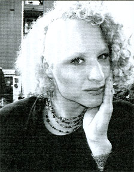

 |
CAFE
INTIME
PIANOBAR FOR DE DEKADENTE OG DE DEKORATIVE |
Allegade 25, 2000 Frederiksberg
Fredag den 29. oktober kl. 22:00 |
Ramona går retro |
I forbindelse med visningen af filmen
"Ramonas Rejse" under GAY & LESBIAN FILM FESTIVAL 04
gentager Ramona Macho sit fuldstændig formidable show som den
rette trak fulde huse i september.
Et show hvor Ramona efter nogle års dunsten omkring vender næsen
nostalgisk mod de gamle klassikere. |
www.cafeintime.dk |